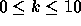

| Welfare Reform |
The federal government has recently passed a reform mandating that all welfare recipients must work to receive benefits. In accordance with this, parents will receive childcare subsidies for children under 13 (i.e., the child must be younger than 13 on September 1 of this year).
The portion of childcare the parent must pay (called the parent fee) is based on income and number of children in the family. The following chart shows an example of how parent fees are determined:
Fee | FAM01 FAM02 FAM03 FAM04 FAM05 FAM06 FAM07 FAM08 FAM09 FAM10
-----|---------------------------------------------------------------------
0.80 | 0 0 0 0 0 0 0 0 0 0
1.60 | 3735 5040 6365 7650 8955 10260 11565 12870 14175 15480
2.40 | 5604 7562 9550 11479 13437 15395 17353 19311 21270 23228
3.20 | 7470 10030 12590 15150 17710 20270 22830 25390 27950 30510
4.00 | 9338 12538 15739 18939 22139 25339 28540 31740 34940 38140
4.80 | 11205 15045 18885 22725 26565 30405 34245 38085 41925 45765
5.60 | 11579 15547 19515 23483 27451 31419 35387 39355 43323 47291
6.40 | 11953 16049 20145 24240 28336 32432 36528 40624 44720 48815
7.20 | 12327 16551 20774 24998 29222 33445 37669 41892 46116 50340
8.00 | 12701 17052 21404 25755 30107 34458 38810 43161 47513 51864
8.80 | 13075 17554 22033 26513 30992 35471 39950 44430 48909 53388
9.60 | 13449 18056 22663 27270 31877 36484 41091 45698 50305 54912
Here ``FAMxx" means a family with xx children. Each entry in the chart represents a base salary; successive rows in a column define a salary range. For example, in column ``FAM04", row 2 defines a salary range from $7650 up to but not including $11479. The base parent fee for this salary range is 1.60, corresponding to row 2 (the start of the range). The final row defines the base parent fee for all salaries equal to or above the entries in that row. For example, in column ``FAM01", any salary equal to or above $13449 has base parent fee 9.60.
From this chart, you determine the base parent fee from the family size and income. The base parent fee applies to the youngest child under 13; the fee for each other child under 13 is half of the base parent fee. For example, a family with four children with an income of $8000 would have a base parent fee of 1.60. The parent will pay 1.60 for the youngest child and 0.80 for every other child under 13. Remember that only children younger than 13 will get the child care subsidy; thus there is no parent fee for children 13 or over. Your task is to figure out the parent fee for each child in a family.
The input file has two parts: the first part contains the parent fee table and the second part contains family records.
The parent fee table is specified using the first 12 lines of the input file. Each line contains one non-negative real number (the parent fee) and 10 non-negative integers (the incomes for families with one to ten children), separated by one or more spaces. Note that the values in this table may differ from those listed in the example table above, but it is guaranteed that the numbers in each column will increase as the table is examined from top to bottom.
The family records begin on the next line. The first line of the family records section contains a positive integer n; there are n families to process. Each family record begins with the parent's name (a string of 1 to 20 characters on its own line). The next line contains an integer k, the number of children in the family (  ) and a non-negative integer s, the family's income. The next k lines contain the children's birthdays, one per line. Each birthday consists of three integers of the form mm dd yy (mm = month, dd = day, yy = year); leading zeroes will not be used for one digit months or days. All birthdays will be valid and no child will be older than 25.
Children in the same family will not share birthdays.
Assume the first line of the input file contains 10 zeros for the incomes as shown in the sample below.
For each child, output the parent name, child's age (on September 1, 1996), and parent fee. Children should be listed in the order they appear in the input. Leave a blank line after the output for each family. Follow the format illustrated in the Sample Output.
0.80 0 0 0 0 0 0 0 0 0 0 1.60 3735 5040 6365 7650 8955 10260 11565 12870 14175 15480 2.40 5604 7562 9550 11479 13437 15395 17353 19311 21270 23228 3.20 7470 10030 12590 15150 17710 20270 22830 25390 27950 30510 4.00 9338 12538 15739 18939 22139 25339 28540 31740 34940 38140 4.80 11205 15045 18885 22725 26565 30405 34245 38085 41925 45765 5.60 11579 15547 19515 23483 27451 31419 35387 39355 43323 47291 6.40 11953 16049 20145 24240 28336 32432 36528 40624 44720 48815 7.20 12327 16551 20774 24998 29222 33445 37669 41892 46116 50340 8.00 12701 17052 21404 25755 30107 34458 38810 43161 47513 51864 8.80 13075 17554 22033 26513 30992 35471 39950 44430 48909 53388 9.60 13449 18056 22663 27270 31877 36484 41091 45698 50305 54912 3 Smith 5 28000 1 1 80 1 1 90 1 1 91 1 1 92 1 1 94 Jones 2 15000 12 20 87 3 22 96 Doe 3 9500 1 1 95 2 1 96 3 3 90
Smith 16 0.00 Smith 6 2.80 Smith 5 2.80 Smith 4 2.80 Smith 2 5.60 Jones 8 2.00 Jones 0 4.00 Doe 1 0.80 Doe 0 1.60 Doe 6 0.80